如何为楼板添加边
How to Add Edges to a slab
Objective 工具允许你为 ARCHICAD 中创建的楼板添加特殊边。
使用该工具：
- 从你的 ARCHICAD 工具箱中选择 Slab Edge tool（楼板边工具）：
提示：该工具的位置可能与下图不同，具体取决于你的工具箱设置。
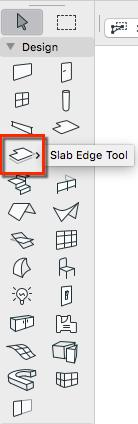
- 配置所需的 Edge Type（边类型）
- 将鼠标移到楼板的边上 —— 光标应当发生变化，如下图所示：
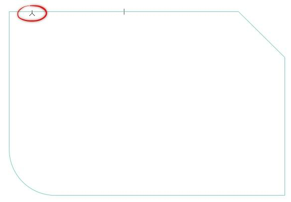
- 在显示新光标时点击该边上的任意位置 —— 这将仅把新的楼板边应用到那条边上。
或者，要把边应用到楼板的周边：
- 将鼠标悬停在楼板的某个角点上
- 你应当会看到一个 ARCHICAD 对勾图标：
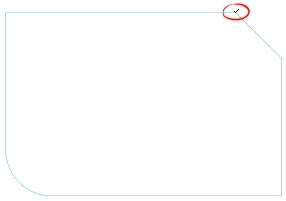
- 在对勾图标可见时点击该角点，即可将楼板边应用到楼板周边。
The Objective Tool allows you to add special edges to Slabs created within ARCHICAD.
To use the tool:
- Select theSlab Edge toolfrom your ARCHICAD Toolbox:
TIP: The location of the tool may vary from the image below, depending on your Toolbox settings.
- Configure the Edge Type you require
- Move your mouse over the edge of a Slab - your cursor should change as shown below:
- Click anywhere on this edge whilst the new cursor is displayed - this will apply your new Slab Edge to that edge only.
Alternatively, to apply your edge to the perimeter of your Slab:
- Hover your mouse over a corner point of the Slab
- You should see an ARCHICAD tick icon:
- Click on the corner point while the Tick icon is visible to apply the Slab Edge to the perimeter of the Slab.
英文原文对照Official English Original
The Objective Tool allows you to add special edges to Slabs created within ARCHICAD.
To use the tool:
- Select theSlab Edge toolfrom your ARCHICAD Toolbox:
TIP: The location of the tool may vary from the image below, depending on your Toolbox settings.
- Configure the Edge Type you require
- Move your mouse over the edge of a Slab - your cursor should change as shown below:
- Click anywhere on this edge whilst the new cursor is displayed - this will apply your new Slab Edge to that edge only.
Alternatively, to apply your edge to the perimeter of your Slab:
- Hover your mouse over a corner point of the Slab
- You should see an ARCHICAD tick icon:
- Click on the corner point while the Tick icon is visible to apply the Slab Edge to the perimeter of the Slab.
如何使用 Objective 旋转对象
How to Rotate an object using Objective
要使用 Objective 中的 Rotate（旋转）功能，你需要：
- ARCHICAD 中的一个对象或灯光
- 处于立面、平面或剖面视图。
在平面视图中旋转对象
- 选择你希望旋转的对象
- 转到 Cadimage > Objective > Tools > Rotate
- 然后：
- 点击旋转轴的第一个点（下图第 1 项）
- 点击旋转轴的第二个点（下图第 2 项）
- 点击设置旋转角度（或在 Tracker 中输入角度）
下图你可以看到第二与第三次点击之间的旋转预览（红线为旋转轴）：
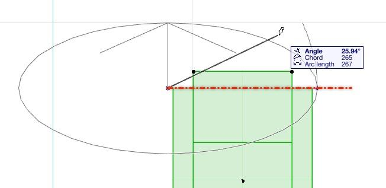
如你所见，Angle（角度）字段以粗体高亮显示，因此你可以直接输入新角度来精确设置旋转。
下面的截图显示同一把椅子在旋转完成前后的四个视图：
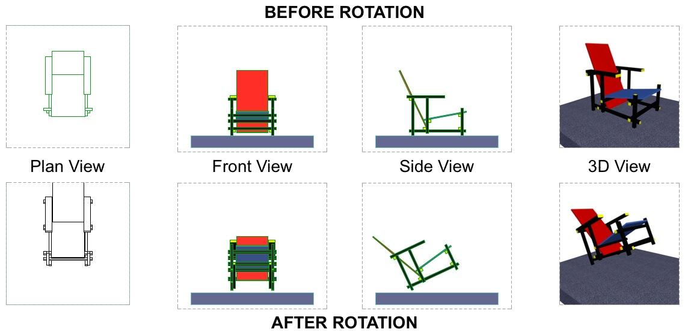
在剖面图或立面图中旋转对象
- 点击定义旋转点
- 点击定义参考角度
- 第三次点击可以任意位置，以便自由摆放对象，或点击在其他几何体上以对齐构件：
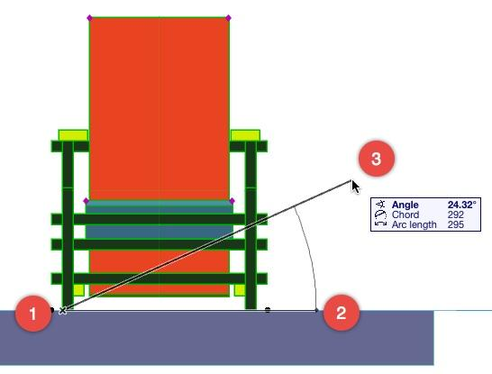
注意：当你旋转对象或灯光时，嵌入式库中会创建一个新版本，其中包含 Objective 变换所需的附加参数。名称将为原对象或灯光名称加上一个“+”标记。
To use the Rotate functionality within Objective, you need:
- An Object or Lamp in ARCHICAD
- To be in Elevation, Plan or Section view.
To Rotate an Object in Plan view
1.Select the Object/s you wish to Rotate
- Go to Cadimage> Objective > Tools > Rotate
- Then:
- Click on the first point of the Rotation Axis (Item #1 in the image below)
- Click on the second point of the Rotation Axis (Item #2 in the image below)
- Click to set the Rotation Angle (or enter the angle in the Tracker)
Below you can see the Rotation preview between the second and third click (the red line is the Rotation axis):
As you can see, the Angle field is highlighted in bold so you can simply type a new angle to set the Rotation precisely.
The following screenshot shows four views of the same chair before and after the Rotation has been completed:
To Rotate an Object in Section or Elevation view
- Click to define the rotation point
- Click to define the reference angle
- The third click can be anywhere to freehand position the Object, or maybe on other geometry to align elements:
NOTE: When you Rotate an Object or Lamp, a new version is created in the Embedded Library with the additional parameters required for the Objective transformation. The name will be the original Object or Lamp name with a ‘+’ tagged to the end.
英文原文对照Official English Original
To use the Rotate functionality within Objective, you need:
- An Object or Lamp in ARCHICAD
- To be in Elevation, Plan or Section view.
To Rotate an Object in Plan view
1.Select the Object/s you wish to Rotate
- Go to Cadimage> Objective > Tools > Rotate
- Then:
- Click on the first point of the Rotation Axis (Item #1 in the image below)
- Click on the second point of the Rotation Axis (Item #2 in the image below)
- Click to set the Rotation Angle (or enter the angle in the Tracker)
Below you can see the Rotation preview between the second and third click (the red line is the Rotation axis):
As you can see, the Angle field is highlighted in bold so you can simply type a new angle to set the Rotation precisely.
The following screenshot shows four views of the same chair before and after the Rotation has been completed:
To Rotate an Object in Section or Elevation view
- Click to define the rotation point
- Click to define the reference angle
- The third click can be anywhere to freehand position the Object, or maybe on other geometry to align elements:
NOTE: When you Rotate an Object or Lamp, a new version is created in the Embedded Library with the additional parameters required for the Objective transformation. The name will be the original Object or Lamp name with a ‘+’ tagged to the end.
如何使用 Objective 分割对象
How to Split an Object using Objective
使用 Objective 中的 Split（分割）命令时，你需要记住：
- 分割只能应用于放置在模型中的对象
- 分割可以在平面、立面或剖面视图中进行。
在下面的文章中，我们演示如何使用 ARCHICAD 的 Designer Chair 09 对象分割对象。
在平面视图中分割对象
操作步骤：
- 选择你希望分割的对象
- 从 ARCHICAD 菜单中，选择 Cadimage Tools > Objective > Tools > Split
- 点击一个点以定义分割轴的起点（下图第 1 项）
- 点击第二个点以定义分割轴的终点（下图第 2 项）
- 点击所得轴的一侧以选中该侧，这样你就可以按需删除或移动它（下图第 3 项）：
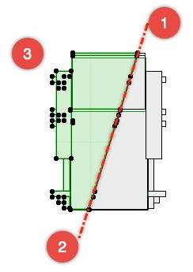
在剖面/立面视图中分割对象
在剖面图或立面图中分割对象与在平面图中分割非常类似。
- 点击一个点以定义分割轴的起点
- 点击第二个点以定义分割轴的终点
- 点击需要保持选中的那一侧
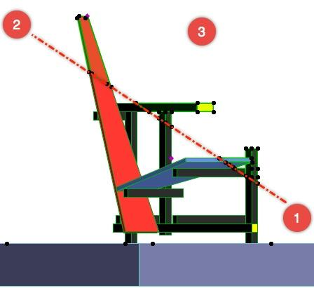
此操作可以根据需要重复任意多次，直至得到最终对象。
When using the Split command in Objective, you need to remember:
- Splitting can only be applied to an Object placed in the model
- Splitting can be done in Plan; Elevation or Section views.
In the article below, we demonstrate how to split an Object using the ARCHICAD Designer Chair 09 Object.
Splitting an Object in Plan View
To do this:
- Select the Object you wish to Split
- From the ARCHICAD menu, choose Cadimage Tools > Objective > Tools > Split
- Click a point to define the start point of the Split axis (Item 1 in the image below)
- Click a second point to define the end point of the Split axis (Item 2 in the image below)
- Click on one side of the resulting axis to select the side so that you can delete or move it if desired (Item 3 in the image below):
Splitting an Object in Section/Elevation View
Splitting an Object in Section or Elevation view is much the same as splitting in Plan view.
- Click a point to define the start of the Split axis
- Click a second point to define the end of the Split axis
- Click the side to remain selected
This operation can be repeated as often as required to complete the final Object.
英文原文对照Official English Original
When using the Split command in Objective, you need to remember:
- Splitting can only be applied to an Object placed in the model
- Splitting can be done in Plan; Elevation or Section views.
In the article below, we demonstrate how to split an Object using the ARCHICAD Designer Chair 09 Object.
Splitting an Object in Plan View
To do this:
- Select the Object you wish to Split
- From the ARCHICAD menu, choose Cadimage Tools > Objective > Tools > Split
- Click a point to define the start point of the Split axis (Item 1 in the image below)
- Click a second point to define the end point of the Split axis (Item 2 in the image below)
- Click on one side of the resulting axis to select the side so that you can delete or move it if desired (Item 3 in the image below):
Splitting an Object in Section/Elevation View
Splitting an Object in Section or Elevation view is much the same as splitting in Plan view.
- Click a point to define the start of the Split axis
- Click a second point to define the end of the Split axis
- Click the side to remain selected
This operation can be repeated as often as required to complete the final Object.
如何访问 Objective 库
How to access the Objective Libraries
Cadimage Objective 工具自带一个参数化对象库，可在创建建筑模型时使用。该库分为两部分：一部分用于 Steel Elements（钢构件），另一部分用于 Timber Elements（木构件）。
要查看 Objective Library（Objective 库）：
- 在工具箱中双击 Object（对象）Tool（工具）以打开设置对话框：
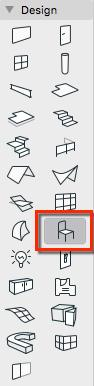
- 你可以在 ARCHICAD Library 20 > Cadimage Library 20 下找到 Objective Library（如下图所示）：
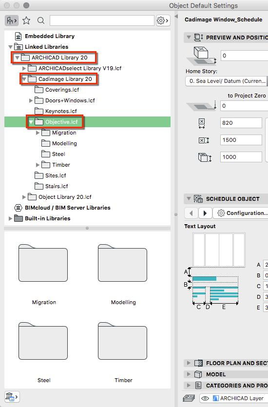
钢库构件
点击钢库即可查看它们（见下图）：

木库对象
点击下方的 Timber（木构件）文件夹即可查看它们：
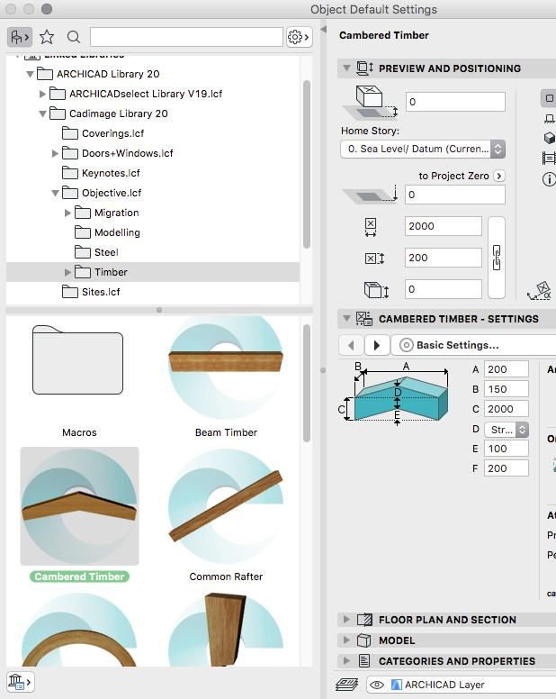
如果查看木库，你会看到其中包含比标准 ARCHICAD 库多得多的传统木框架构件。
需要特别注意的是，这些对象是标准 GDL 对象，用于二维或三维可视化时不需要安装插件。即使没有插件也可以编辑它们，但某些智能功能（如自动生成热点）将不可用。这意味着你可以放心地归档或分发你的项目而不必担心数据丢失。
框架设置对话框的工作方式与标准对象设置对话框完全相同，唯一区别是其中只显示 Objective 对象。
The Cadimage Objective Tool comes with a Library of parametric Objects that can be used when creating architectural models. The Library is split in to two sections: one for Steel Elements and one for Timber Elements.
To view the Objective Library:
- Double click on the Object Tool in the Toolbox to open the settings dialog:
- You Will find the Objective Library under ARCHICAD Library 20>Cadimage Library 20 (as shown below):
Steel Library Components
These can be seen by clicking on the Steel Library (see image below):
Timber Library Objects
These can be seen by clicking on the Timber folder below:
If you look at the Timber Library you will see it contains many more traditional timber framing elements than the standard ARCHICAD Library.
It is important to note that these objects are standard GDL and do not require the add-on to be present for 2D or 3D visualisation. They can also be edited without the add-on, but some of the smart features like automatic hotspot generation will not be available. This means you can safely archive or distribute your projects without fear of data loss.
The Framing Settings dialog works in exactly the same way as the standard Object Settings dialog, with the exception that only Objective objects are displayed.
英文原文对照Official English Original
The Cadimage Objective Tool comes with a Library of parametric Objects that can be used when creating architectural models. The Library is split in to two sections: one for Steel Elements and one for Timber Elements.
To view the Objective Library:
- Double click on the Object Tool in the Toolbox to open the settings dialog:
- You Will find the Objective Library under ARCHICAD Library 20>Cadimage Library 20 (as shown below):
Steel Library Components
These can be seen by clicking on the Steel Library (see image below):
Timber Library Objects
These can be seen by clicking on the Timber folder below:
If you look at the Timber Library you will see it contains many more traditional timber framing elements than the standard ARCHICAD Library.
It is important to note that these objects are standard GDL and do not require the add-on to be present for 2D or 3D visualisation. They can also be edited without the add-on, but some of the smart features like automatic hotspot generation will not be available. This means you can safely archive or distribute your projects without fear of data loss.
The Framing Settings dialog works in exactly the same way as the standard Object Settings dialog, with the exception that only Objective objects are displayed.
如何使用 Split 创建斜接转角
How to use the Split to create mitered corners
Objective 的 Split（分割）功能另一个更实用的应用示例，是处理需要斜接的结构构件，例如钢梁或木作构件。
在下面的示例中，已放置了四根钢梁，但 A 和 B 处的交叉口需要做斜接，以与 C 和 D 处保持一致。
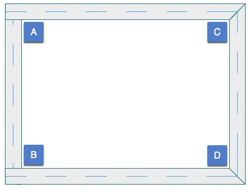
下面这张彩色图更清楚地显示了问题所在：
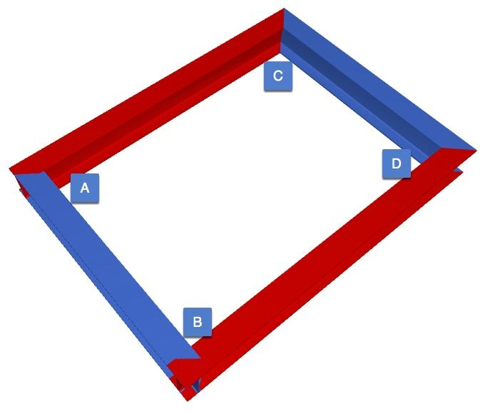
要在 A 点创建正确的斜接交接：
- 选择要相交的两根梁
- 选择 Cadimage > Objective > Tools > Split
- 点击两根梁的内部交点，定义分割轴的起点（下图第 1 项）
- 点击两根梁的外部交点（或使用辅助线定义 135° 角度），定义分割轴的终点（下图第 2 项）
- 点击你希望保持选中的那一侧（下图第 3 项）
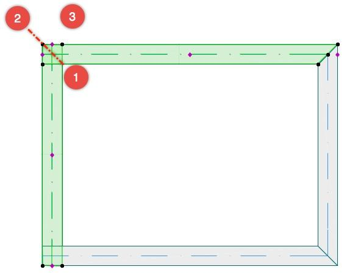
注意：此时我们不能直接删除所选元素，因为水平梁会被一并移除。先取消所有选择，然后只选中如上图所示的两个小的“切下段”梁：
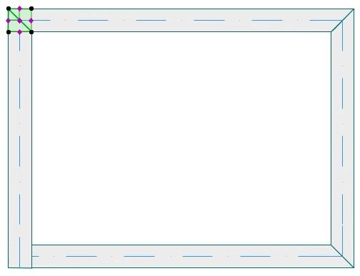
结果如下图所示：
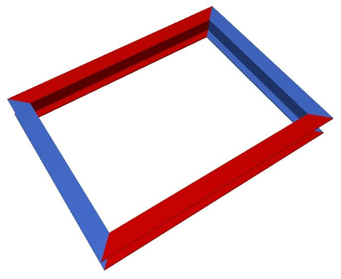
Another, more practical, example of when to use Objective's Split functionality is when working with structural elements such as Steel Beams or Joinery elements that need to be mitred.
In the example below, four steel beams have been placed but the intersections at A and B need to be mitred to match those at C and D.
The coloured image below shows the issue more clearly:
To create the correct mitred junction at Point A:
- Select the two beams to be intersected
- Choose Cadimage> Objective> Tools> Split
- Click on the internal intersection of the two beams to define the start of the Split axis (Item #1 below)
- Click on the external intersection of the two beams (or use the guidelines to define a 135° angle) to define the end of the Split axis (Item #2 below)
- Click the side that you want to remain selected (Item #3 below)
NOTE: At this point we cannot simply delete the selected elements as the horizontal beams will be removed. Deselect everything then select only the two small ‘cut off’ segments of beam as shown below:
The result is shown below:
英文原文对照Official English Original
Another, more practical, example of when to use Objective's Split functionality is when working with structural elements such as Steel Beams or Joinery elements that need to be mitred.
In the example below, four steel beams have been placed but the intersections at A and B need to be mitred to match those at C and D.
The coloured image below shows the issue more clearly:
To create the correct mitred junction at Point A:
- Select the two beams to be intersected
- Choose Cadimage> Objective> Tools> Split
- Click on the internal intersection of the two beams to define the start of the Split axis (Item #1 below)
- Click on the external intersection of the two beams (or use the guidelines to define a 135° angle) to define the end of the Split axis (Item #2 below)
- Click the side that you want to remain selected (Item #3 below)
NOTE: At this point we cannot simply delete the selected elements as the horizontal beams will be removed. Deselect everything then select only the two small ‘cut off’ segments of beam as shown below:
The result is shown below:
Ci Structural 工具简介
Introducing the Ci Structural Tool
自 Archicad 28 起，Objective（客观化编辑）工具已不再存在，然而此前属于 Objective 工具的许多功能和库构件都已移入 Structural 工具。
Rotate（旋转）、Split（分割）、Bend（弯曲）、Offset（偏移）和 Remove Cuts（移除裁切）等标准功能均保留在 Structural 工具中，其工作方式与在 Objective 工具中完全一致。
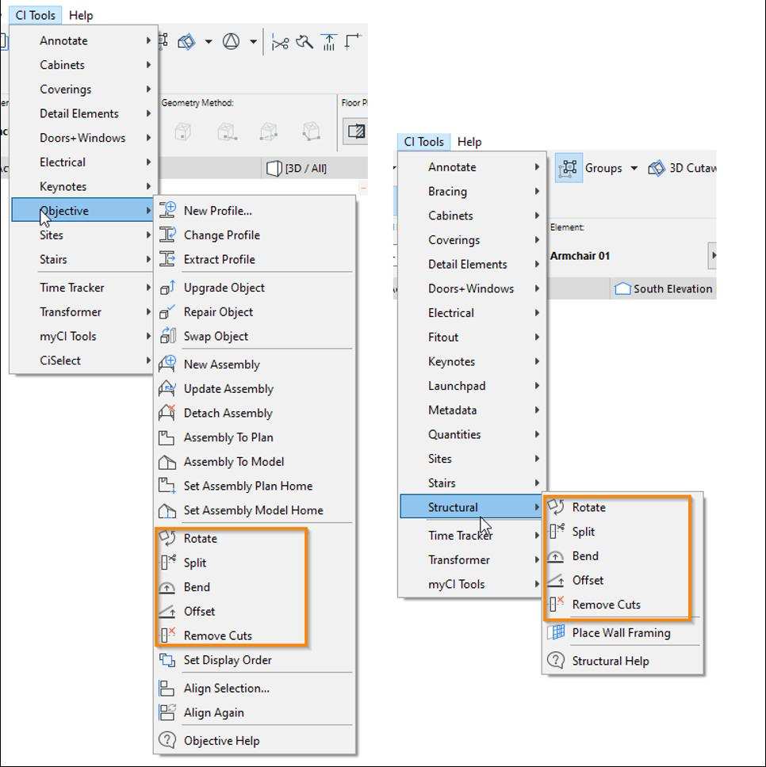
随着自 Archicad 26 发布以来的技术进步，复杂断面（Complex Profile）功能现在可以在 Archicad 内部原生实现，因此我们建议使用这些功能来创建和拉伸断面。
此前位于 CI Select 库中的一大批库构件也已移入 Structural 库。
下面的列表包含了所有已移入 Structural 库的库构件，它们都原先位于 CI Select 27 Library/Structural/ 文件夹中（见下图，其中列出了这些库构件在 Archicad 27 中的位置）
- Cross Brace #1620
- Engineers Bolt 3D #1396
- Screw #1593
- Screw #1596
- Screw #1597
- Gib Handibrac #1602
- Joist Hanger 95x165 #1606
- Nail #1607
- Joist Hanger 70x180 #1608
- Joist Hanger 47x190 #1609
- Joist Hanger 47x120 #1610
- Joist Hanger 47x90 #1612
- Anchor Bolt 3D #1625
- Multi Grip #1630
- Mitek Bowmac Post Bracket #1993
- Mitek Tylok Nail Plate #1998
- Mitek Bowmac Strap #1999
- Floor Framing #1623
- Floor Framing #1943
- Scissor Truss #1992
- End Truss # 1652
- Rafters # 1653
- Rafter Truss #1654
- Purlin #1655
- Girder Truss # 1656
- Jack Truss # 1657
- Truncated Girder Truss # 1658
- Truncated Truss # 1659
- Attic Truss # 2012
- Creeper Truss #2066
- Rafter Truss #2067
- Girder Truss #2068
- Truncated Girder Truss #2069
- Monopitch Truss #2070
- End Truss #2071
- Truncated Rafter Truss #2072
- Valley Saddle Truss #2073
- Flying Rafters #2074
- Hip Truss #2075
- Plain Channels #1739
- Cees and Zeds #1741
- Equal Angles #1745
- Lipped Channels #1746
- PFC Horizontal #1747
- PFC Vertical #1748
- Solid Beam or Column #1750
- Tee Section Beam or Column #1751
- Tube Rafter #1752
- Unequal Angle #1753
- Portal Frame #1754
- Speedfloor Beam #1756
- Steel Portal Frame #1941
- Delta Truss #1973
- Portal Frame #2024
- House Pile #1929
- Plywood I-Beam #1757
- Posi Strut #1758
- Timber Member #1934
- Glulam Beam #1949
- Plywood Box Beam #1950
- Timber Lintel NZS3604 #1982
- Lintel #1991
- Wall Frame #2013
这些现在位于 Archicad 28 中的以下文件夹。
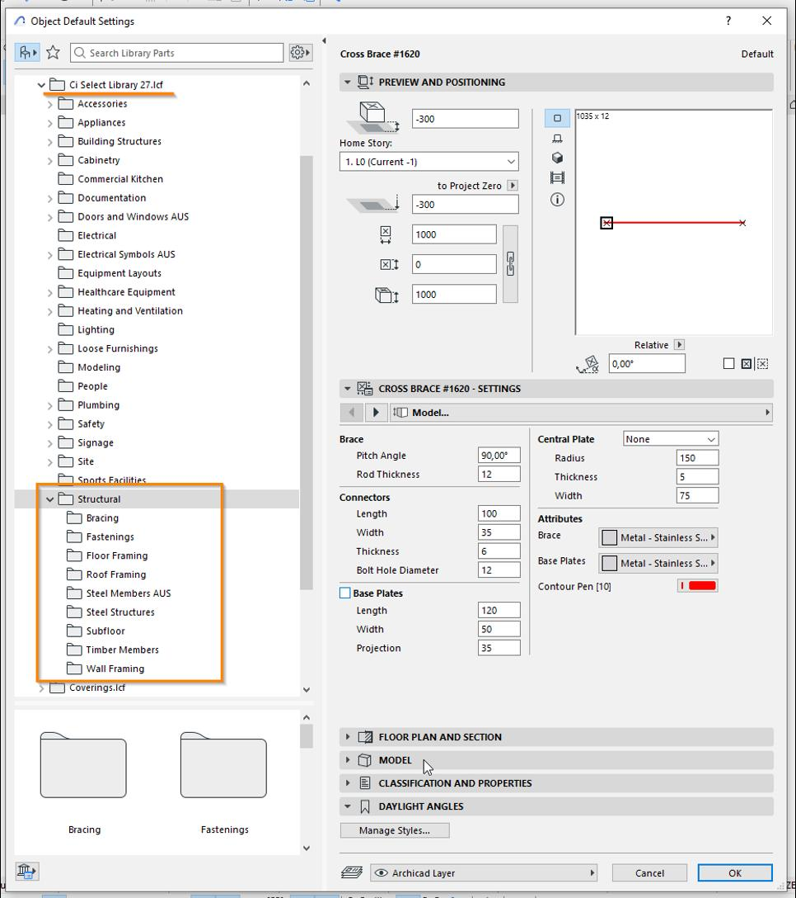
From Archicad 28, the Objective tool has ceased to exist, however many of the functions and Library parts that were previously part of the Objective Tool have moved to the Structural Tool.
The standard functionality of Rotate, Split, Bend, Offset and Remove Cuts, have been retained in the Structural Tool, and function just as they did in the Objective Tool.
With advancements since the release of Archicad 26, the Complex Profile functions can now be performed natively within Archicad, so we recommend using those to Create and Extrude profiles.
A whole range of library parts that previously resided in the CI Select library has also been moved to the Structural Library.
The list below includes all the Library parts that have been moved to Structural Library, these are all the parts previously found in the CI Select 27 Library/Structural/folder (See image below list of the Archicad 27 location of these Library parts)
- Cross Brace #1620
- Engineers Bolt 3D #1396
- Screw #1593
- Screw #1596
- Screw #1597
- Gib Handibrac #1602
- Joist Hanger 95x165 #1606
- Nail #1607
- Joist Hanger 70x180 #1608
- Joist Hanger 47x190 #1609
- Joist Hanger 47x120 #1610
- Joist Hanger 47x90 #1612
- Anchor Bolt 3D #1625
- Multi Grip #1630
- Mitek Bowmac Post Bracket #1993
- Mitek Tylok Nail Plate #1998
- Mitek Bowmac Strap #1999
- Floor Framing #1623
- Floor Framing #1943
- Scissor Truss #1992
- End Truss # 1652
- Rafters # 1653
- Rafter Truss #1654
- Purlin #1655
- Girder Truss # 1656
- Jack Truss # 1657
- Truncated Girder Truss # 1658
- Truncated Truss # 1659
- Attic Truss # 2012
- Creeper Truss #2066
- Rafter Truss #2067
- Girder Truss #2068
- Truncated Girder Truss #2069
- Monopitch Truss #2070
- End Truss #2071
- Truncated Rafter Truss #2072
- Valley Saddle Truss #2073
- Flying Rafters #2074
- Hip Truss #2075
- Plain Channels #1739
- Cees and Zeds #1741
- Equal Angles #1745
- Lipped Channels #1746
- PFC Horizontal #1747
- PFC Vertical #1748
- Solid Beam or Column #1750
- Tee Section Beam or Column #1751
- Tube Rafter #1752
- Unequal Angle #1753
- Portal Frame #1754
- Speedfloor Beam #1756
- Steel Portal Frame #1941
- Delta Truss #1973
- Portal Frame #2024
- House Pile #1929
- Plywood I-Beam #1757
- Posi Strut #1758
- Timber Member #1934
- Glulam Beam #1949
- Plywood Box Beam #1950
- Timber Lintel NZS3604 #1982
- Lintel #1991
- Wall Frame #2013
These are now located in the following folder in Archicad 28.
英文原文对照Official English Original
From Archicad 28, the Objective tool has ceased to exist, however many of the functions and Library parts that were previously part of the Objective Tool have moved to the Structural Tool.
The standard functionality of Rotate, Split, Bend, Offset and Remove Cuts, have been retained in the Structural Tool, and function just as they did in the Objective Tool.
With advancements since the release of Archicad 26, the Complex Profile functions can now be performed natively within Archicad, so we recommend using those to Create and Extrude profiles.
A whole range of library parts that previously resided in the CI Select library has also been moved to the Structural Library.
The list below includes all the Library parts that have been moved to Structural Library, these are all the parts previously found in the CI Select 27 Library/Structural/folder (See image below list of the Archicad 27 location of these Library parts)
- Cross Brace #1620
- Engineers Bolt 3D #1396
- Screw #1593
- Screw #1596
- Screw #1597
- Gib Handibrac #1602
- Joist Hanger 95x165 #1606
- Nail #1607
- Joist Hanger 70x180 #1608
- Joist Hanger 47x190 #1609
- Joist Hanger 47x120 #1610
- Joist Hanger 47x90 #1612
- Anchor Bolt 3D #1625
- Multi Grip #1630
- Mitek Bowmac Post Bracket #1993
- Mitek Tylok Nail Plate #1998
- Mitek Bowmac Strap #1999
- Floor Framing #1623
- Floor Framing #1943
- Scissor Truss #1992
- End Truss # 1652
- Rafters # 1653
- Rafter Truss #1654
- Purlin #1655
- Girder Truss # 1656
- Jack Truss # 1657
- Truncated Girder Truss # 1658
- Truncated Truss # 1659
- Attic Truss # 2012
- Creeper Truss #2066
- Rafter Truss #2067
- Girder Truss #2068
- Truncated Girder Truss #2069
- Monopitch Truss #2070
- End Truss #2071
- Truncated Rafter Truss #2072
- Valley Saddle Truss #2073
- Flying Rafters #2074
- Hip Truss #2075
- Plain Channels #1739
- Cees and Zeds #1741
- Equal Angles #1745
- Lipped Channels #1746
- PFC Horizontal #1747
- PFC Vertical #1748
- Solid Beam or Column #1750
- Tee Section Beam or Column #1751
- Tube Rafter #1752
- Unequal Angle #1753
- Portal Frame #1754
- Speedfloor Beam #1756
- Steel Portal Frame #1941
- Delta Truss #1973
- Portal Frame #2024
- House Pile #1929
- Plywood I-Beam #1757
- Posi Strut #1758
- Timber Member #1934
- Glulam Beam #1949
- Plywood Box Beam #1950
- Timber Lintel NZS3604 #1982
- Lintel #1991
- Wall Frame #2013
These are now located in the following folder in Archicad 28.
概述
Overview
Objective 工具是一个多功能工具，将扩展你在 ARCHICAD 中进行三维建模的能力。
使用 Objective 你可以：
- Objective 库 —— 包含高度可编辑的木框架和钢结构构件
- 对象编辑 —— 包括：
- 旋转（Rotating）：在剖面图或立面图中倾斜或自由旋转对象 观看短视频
- 分割（Splitting）：像在平面图、剖面图或立面图中分割二维元素那样分割三维对象 观看短视频
- 弯曲（Bending）：将具有恒定横断面轮廓的 Objective 框架对象在二维或三维中弯曲成曲线 观看短视频
- 偏移（Offsetting）：将具有恒定横断面轮廓的 Objective 框架对象水平或垂直偏移
- 拉伸（Extrusions）—— 标准或自定义断面，可沿二维多段线拉伸，或在二维、三维中手动放置
- 楼板边（Slab Edges）—— 五种可定制断面，包括反边、反起边、柱脚、开槽边或台阶，均可与楼板边关联。
使用 Objective 编辑对象时，对象的原始参数会被保留。这意味着即使你把对象切成若干小片，也可以在任何时候将其修复，回到原始状态（这与把对象转换为 Morph 不同）。
The Objective tool is a multifunctional tool that will extend your ability to model in 3D in ARCHICAD.
With Objective you have access to:
- Objective Library – containing highly editable timber framing and steel construction elements
- Object editing – includes:
- Rotating : Tilt or free-rotate Objects in sections or elevations Watch a short video
- Splitting : Split 3D Objects the same way you would split 2D elements in plan, section or elevation Watch a short video
- Bending : Take Objective Framing Objects with a constant cross section profile and bend to a curve in 2D or 3D Watch a short video
- Offsetting : take Objective Framing Objects with a constant cross section profile and offset it horizontally or vertically
- Extrusions – standard or custom profiles which can be extruded along 2D polylines or placed manually in 2D or 3D
- Slab Edges – five customisable profiles including counter edges, counter upstands, footings, rebated edges or steps which link to slab edges.
When using Objective to edit an Object, the original parameters of the Object are maintained. This means that even if you cut the Object into several small pieces, you can repair it at any time, taking it back to its original state (unlike when you convert an Object to a Morph).
英文原文对照Official English Original
The Objective tool is a multifunctional tool that will extend your ability to model in 3D in ARCHICAD.
With Objective you have access to:
- Objective Library – containing highly editable timber framing and steel construction elements
- Object editing – includes:
- Rotating : Tilt or free-rotate Objects in sections or elevations Watch a short video
- Splitting : Split 3D Objects the same way you would split 2D elements in plan, section or elevation Watch a short video
- Bending : Take Objective Framing Objects with a constant cross section profile and bend to a curve in 2D or 3D Watch a short video
- Offsetting : take Objective Framing Objects with a constant cross section profile and offset it horizontally or vertically
- Extrusions – standard or custom profiles which can be extruded along 2D polylines or placed manually in 2D or 3D
- Slab Edges – five customisable profiles including counter edges, counter upstands, footings, rebated edges or steps which link to slab edges.
When using Objective to edit an Object, the original parameters of the Object are maintained. This means that even if you cut the Object into several small pieces, you can repair it at any time, taking it back to its original state (unlike when you convert an Object to a Morph).
ProKit Structural – 从这里开始
ProKit Structural – Start here
Structural 工具可用于非常快速地放置三维参数化构件。该工具包含与项目中各类结构构件相关的库对象。
它包含一个内容广泛且相当精细的参数化二维与三维对象库，分类如下：
支撑（Bracing）
文档（Documentation）
紧固件（Fastenings）
钢框架（Steel Frames）
基层楼板（Subfloor）
木框架（Timber Framing）
这些都可以通过 ARCHICAD 对象工具访问。
Libpack 加载（自 ARCHICAD 29 起）
需要特别注意的是，ProKit Structural 工具要求手动将 Structural Libpack 加载到项目中。
与所有库一样，此操作通过库管理器完成。请注意，所加载的 Libpack 需在单个文件层级上选择，而非像早期 ARCHICAD 版本那样在文件夹层级上选择。
库管理器可通过 File > Library Manager 下拉菜单打开。

进入库管理器后，我们将使用“Add”按钮添加 Structures Libpack。

这允许你定位到 ARCHICAD 安装文件夹中的 ProKit Libpack 文件夹。
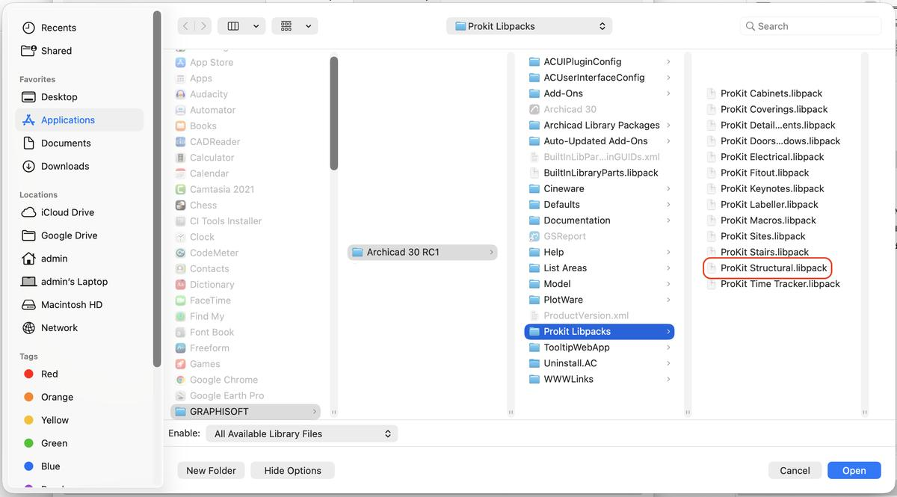
这将加载 Structural Libpack 及其关联的宏。
Structural 对象现在可在 ARCHICAD 对象工具中使用。
放置结构对象
Structural 库对象使用 ARCHCAD 中的对象工具放置。
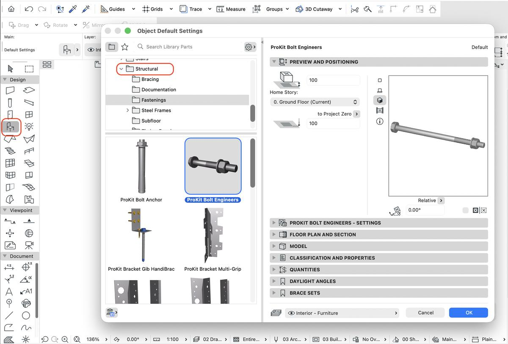
选定库对象后即可放置。
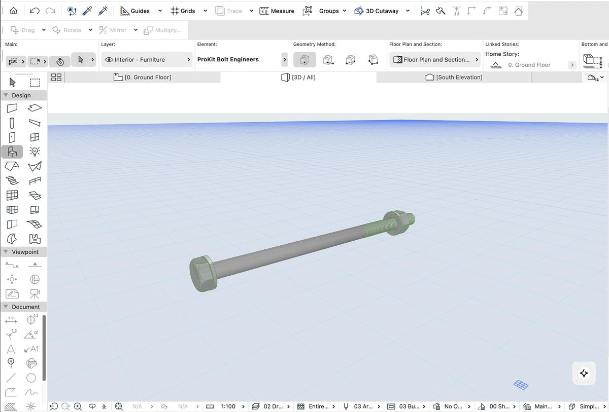
关于 Structural 工具其他功能的详细信息，请参阅知识库中的其他文章。
The Structural Tool allows for very quick placement 3D parametric components. This Tool contains Library Objects that relate to various structural components in a project.
It contains an extensive sophisticated library of parametric 2D and 3D Objects with the following Categories:
Bracing
Documentation
Fastenings
Steel Frames
Subfloor
Timber Framing
These are accessible through the ARCHICAD Object Tool.
Libpack loading (since ARCHICAD 29)
It is important to note that the ProKit Structural Tool requires the Structural Libpack to be manually loaded into the project.
As with all Libraries this is done through the Library Manager. Please note that the Libpacks that are loaded need to be selected at an individual file and not at a folder level as was the case in earlier ARCHICAD versions.
The Library Manager is accessed through the File>Library Manager dropdown.
Once in the Library Manager we will use the “Add” button to add the Structures Libpack.
This allows navigation to the ProKit Libpack folder located in the ARCHICAD installation folder.
This will load the Structural Libpack and associated Macros.
The Structural Objects will now be available in the ARCHICAD Object Tool.
Placing a Structural Object
The Structural Library Objects are placed with the Object Tool in ARCHCAD.
Once the Library object is selected, it can be placed.
For more detailed information on the other Structural Tool features please see the other articles on the Knowledge Base.
英文原文对照Official English Original
The Structural Tool allows for very quick placement 3D parametric components. This Tool contains Library Objects that relate to various structural components in a project.
It contains an extensive sophisticated library of parametric 2D and 3D Objects with the following Categories:
Bracing
Documentation
Fastenings
Steel Frames
Subfloor
Timber Framing
These are accessible through the ARCHICAD Object Tool.
Libpack loading (since ARCHICAD 29)
It is important to note that the ProKit Structural Tool requires the Structural Libpack to be manually loaded into the project.
As with all Libraries this is done through the Library Manager. Please note that the Libpacks that are loaded need to be selected at an individual file and not at a folder level as was the case in earlier ARCHICAD versions.
The Library Manager is accessed through the File>Library Manager dropdown.
Once in the Library Manager we will use the “Add” button to add the Structures Libpack.
This allows navigation to the ProKit Libpack folder located in the ARCHICAD installation folder.
This will load the Structural Libpack and associated Macros.
The Structural Objects will now be available in the ARCHICAD Object Tool.
Placing a Structural Object
The Structural Library Objects are placed with the Object Tool in ARCHCAD.
Once the Library object is selected, it can be placed.
For more detailed information on the other Structural Tool features please see the other articles on the Knowledge Base.
观看：8 分钟快速上手！
Watch: Get started in 8 minutes!
在这段视频中，Thomas 介绍了 Objective 工具的概览：
In this video, Thomas provides an overview of the Objective Tool:
英文原文对照Official English Original
In this video, Thomas provides an overview of the Objective Tool:
观看：如何在 ARCHICAD 中弯曲形状
Watch: How to Bend shapes in ARCHICAD
在 ARCHICAD 18 中演示
Demonstrated in ARCHICAD 18
英文原文对照Official English Original
Demonstrated in ARCHICAD 18
观看：如何使用 Objective 工具对齐对象和形状
Watch: How to align objects and shapes using the Objective Tool
基于 ARCHICAD 18 演示
Demonstrated using ARCHICAD 18
英文原文对照Official English Original
Demonstrated using ARCHICAD 18
观看：如何在 5 分钟内创建拉伸体
Watch: How to create Extrusions in under 5 minutes
在 ARCHICAD 18 中演示
Demonstrated in ARCHICAD 18
英文原文对照Official English Original
Demonstrated in ARCHICAD 18
观看：如何使用 Objective 工具旋转对象
Watch: How to rotate objects using the Objective tool
在 ARCHICAD 18 中演示
Demonstrated in ARCHICAD 18
英文原文对照Official English Original
Demonstrated in ARCHICAD 18
观看：如何使用 Objective 工具的分割功能
Watch: How to use the Split function of the Objective Tool
在 ARCHICAD 18 中演示
Demonstrated in ARCHICAD 18
英文原文对照Official English Original
Demonstrated in ARCHICAD 18
观看：概览网络研讨会录像（27 分钟）
Watch: Overview webinar recording (27 mins)
> 本页为视频教程（无文字正文）。点击下方官方原文链接观看视频。
英文原文对照Official English Original
Objective 工具可以编辑什么
What can be edited with the Objective Tool
Objective 的构件编辑主要针对 ARCHICAD 的对象（Objects）或灯光（Lamps）—— 但根据所需的编辑操作，存在一些限制：
旋转或分割
这些变换只能应用于对象或灯光：
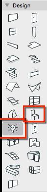
注意：当你旋转或分割对象或灯光时，嵌入式库中会创建一个新版本，其中包含 Objective 变换所需的附加参数。名称将为原对象或灯光名称加上一个“+”标记。
弯曲或偏移
这些变换仅适用于横断面恒定的 Objective Steel Library（Objective 钢库）中的对象：
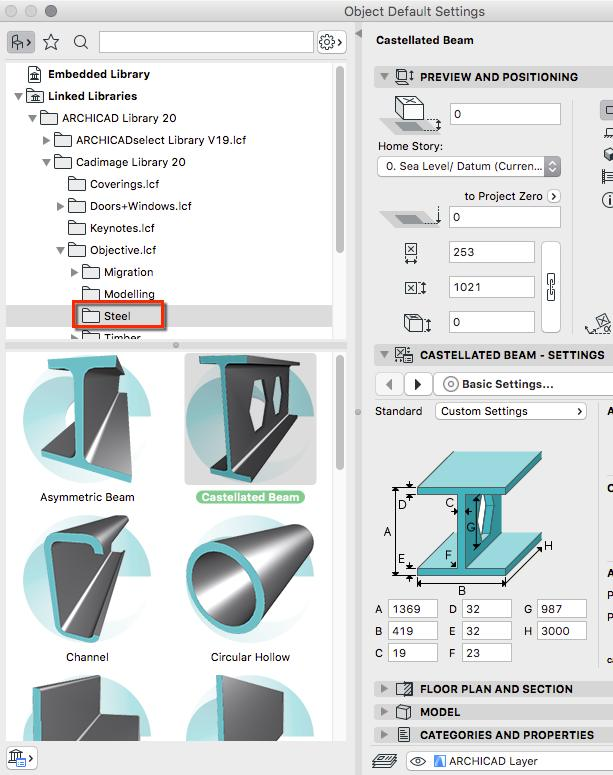
Component editing with Objective primarily works with ARCHICAD Objects or Lamps – however, depending on the editing operation required, there are some limitations:
Rotate or Split
These transformations can only be applied to Objects or Lamps:
NOTE: When you Rotate or Split an Object or Lamp, a new version is created in the Embedded Library with the additional parameters required for the Objective transformation. The name will be the original Object or Lamp name with a ‘+’ tagged to the end.
Bend or Offset
These transformations only work on Objects with a constant cross-sectional profile from the Objective Steel Library:
英文原文对照Official English Original
Component editing with Objective primarily works with ARCHICAD Objects or Lamps – however, depending on the editing operation required, there are some limitations:
Rotate or Split
These transformations can only be applied to Objects or Lamps:
NOTE: When you Rotate or Split an Object or Lamp, a new version is created in the Embedded Library with the additional parameters required for the Objective transformation. The name will be the original Object or Lamp name with a ‘+’ tagged to the end.
Bend or Offset
These transformations only work on Objects with a constant cross-sectional profile from the Objective Steel Library: